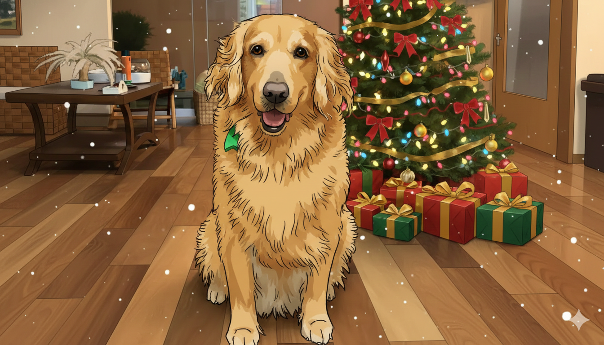
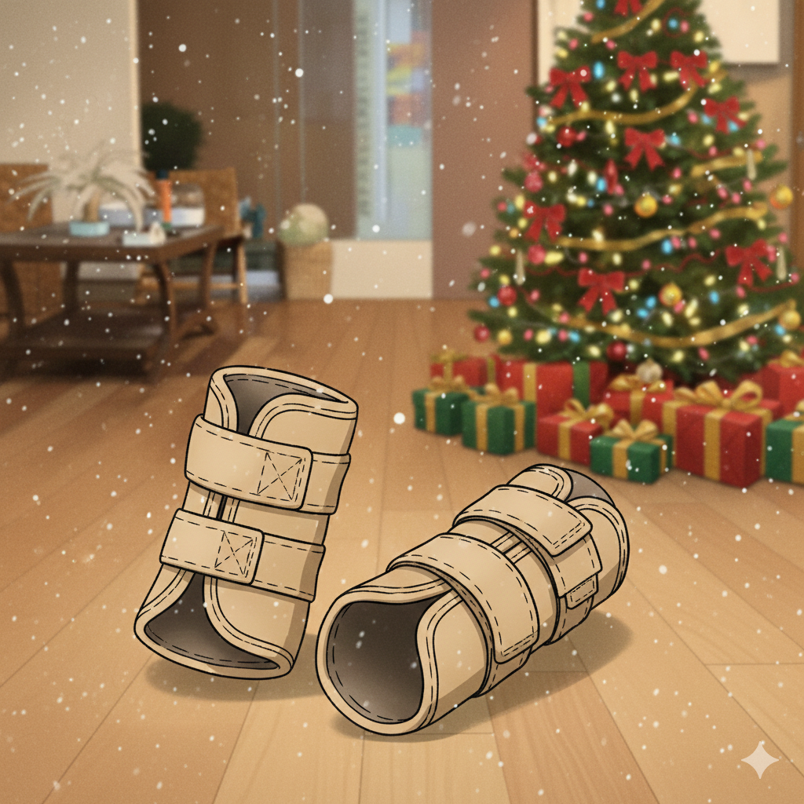
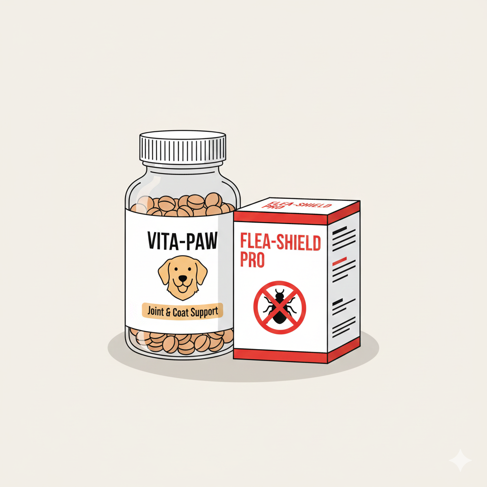
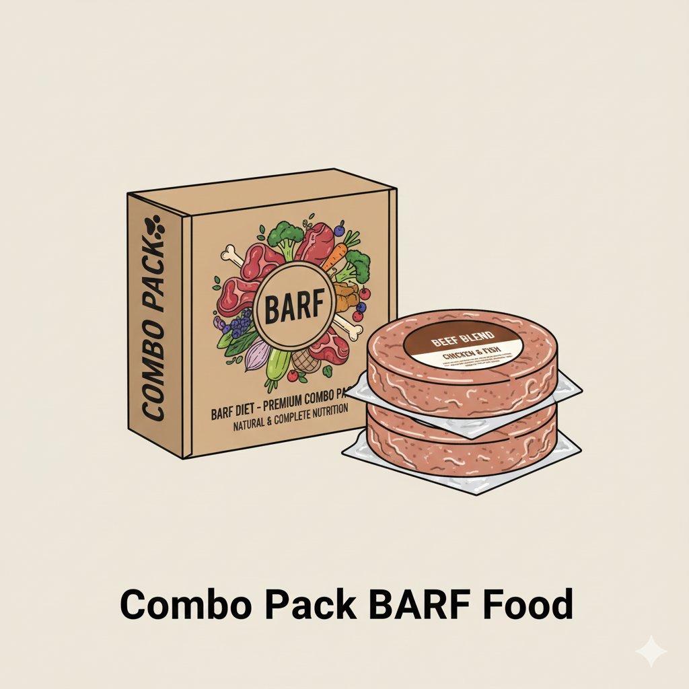
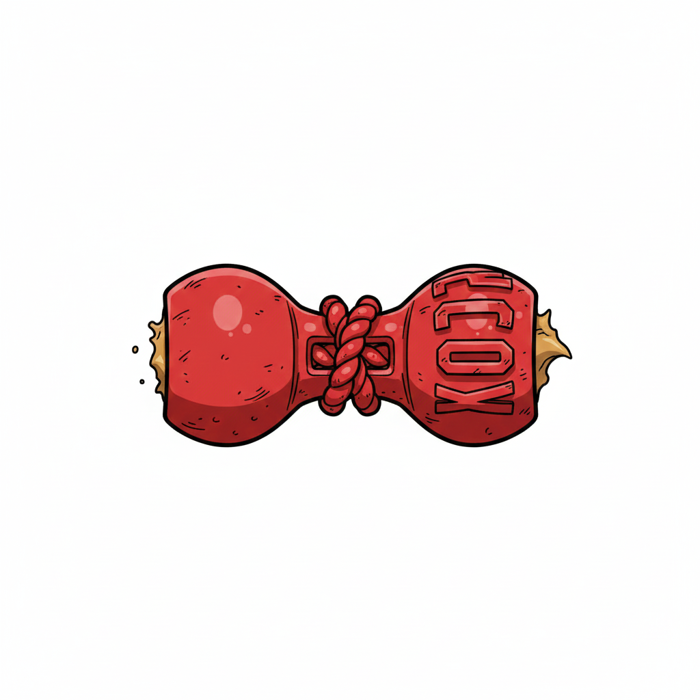
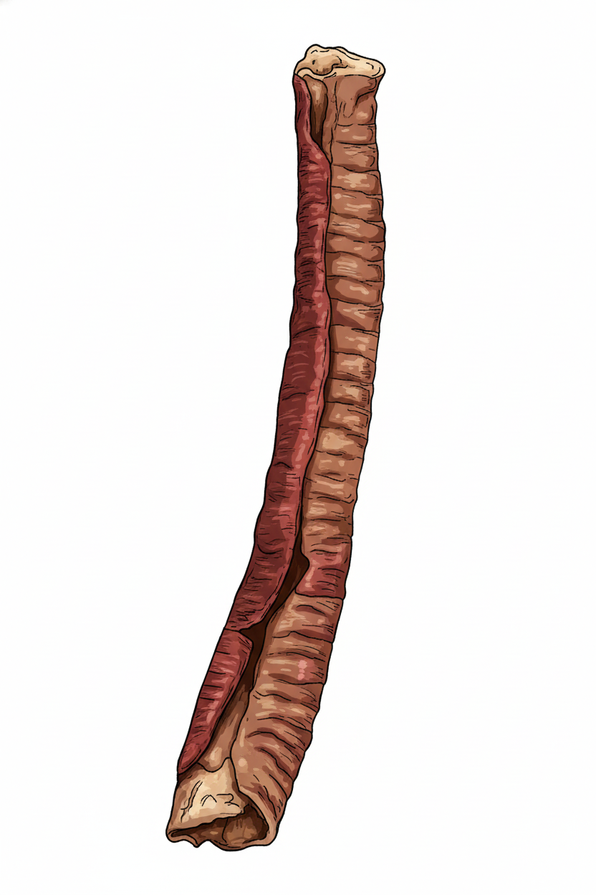

Lista de Deseos de Kerry (9 años, Golden Retriever)
Nuestra querida **Kerry**, la más dulce de la familia, ya tiene 9 años. Estos son deseos enfocados en su **salud, bienestar y entretenimiento** para que siga disfrutando de sus años dorados con mucha energía. ¡Cada regalo es un año más de felicidad para ella!

1. Coderas o Rodilleras Ortopédicas
**Descripción:** Bandas de soporte para las articulaciones.
**Utilidad:** A su edad, el soporte articular es **crucial** para prevenir o aliviar la **artritis** o el **dolor de cadera/codo**, permitiéndole moverse con más comodidad.

2. Suplemento Vitamínico y Antipulgas
**Descripción:** Vitaminas para articulaciones (ej: glucosamina) y un tratamiento antipulgas/antigarrapatas de alta eficacia.
**Utilidad:** Las vitaminas mantienen su pelo **brillante** y sus articulaciones **fuertes**. El antipulgas es una necesidad constante para su **higiene y salud**.

3. Combo Pack de Comida BARF
**Descripción:** Alimento crudo biológicamente apropiado.
**Utilidad:** Una dieta BARF mejora la **digestión**, el **sistema inmunológico** y le da más **energía**. ¡Un gusto saludable y nutritivo!

4. Juguete Duradero para Morder
**Descripción:** Un juguete resistente (ej: Kong) que sea divertido y seguro para masticar.
**Utilidad:** Masticar es una necesidad natural que **reduce el estrés** y ayuda a mantener sus **dientes limpios**. ¡La mantiene entretenida por horas!

5. Tráquea de Res (Snack Natural)
**Descripción:** Snack natural y deshidratado.
**Utilidad:** Un manjar **delicioso y saludable** que satisface su necesidad de morder y le aporta **condroitina y glucosamina** naturales para sus articulaciones.